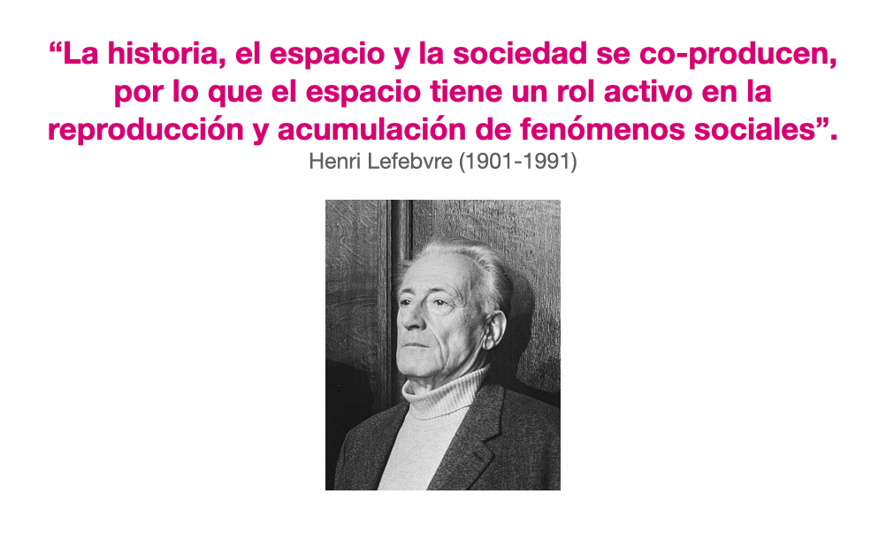
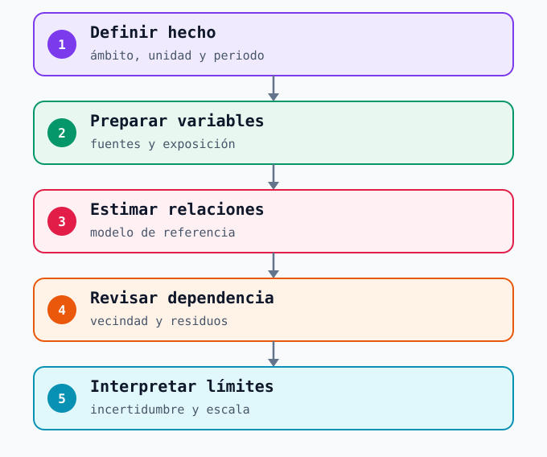
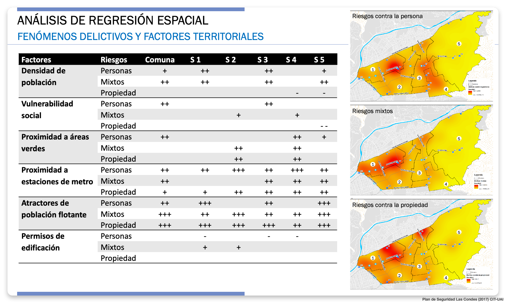

4 Modelamiento espacial
El análisis espacial permite reconocer dónde se concentran hechos registrados. El modelamiento plantea una pregunta distinta: ¿cómo se relaciona esa distribución con las características del territorio? Una regresión puede comparar asociaciones entre lugares y examinar si quedan patrones espaciales sin explicar. Sus resultados ayudan a formular preguntas más precisas; por sí solos no identifican causas ni prueban que una medida vaya a cambiar la ocurrencia de delitos.

La idea de producción social del espacio de Lefebvre (Lefebvre 1974) recuerda que los lugares se configuran mediante actividades, infraestructuras y relaciones entre personas. Una estación y su entorno reúnen flujos, horarios, comercios, viviendas y espacios públicos. Esa diversidad justifica estudiar variables territoriales, siempre con una unidad y una fecha compatibles con el hecho observado. No convierte una característica social del área en atributo de cada pasajero o residente.
4.1 Definir qué se quiere explicar
Antes de elegir un algoritmo hay que definir el resultado: por ejemplo, una categoría de hurtos registrados en el entorno exterior de estaciones durante un periodo comparable. Los avisos internos de Metro, las denuncias policiales del exterior y los relatos de acoso responden a sistemas distintos; mezclarlos produciría un resultado difícil de interpretar. El ejemplo es una pregunta docente, no un análisis realizado con datos de Metro.
| Decisión de diseño | Pregunta para el analista | Límite que debe quedar explícito |
|---|---|---|
| Resultado y periodo | ¿Qué hecho se cuenta y en qué meses o franjas? | Cambios en la denuncia o en el registro pueden parecer cambios del problema. |
| Unidad espacial | ¿Estación, acceso, segmento de calle o entorno caminable? | Una relación a escala barrial no describe automáticamente un pasillo. |
| Variables territoriales | ¿Qué datos de flujo, comercio o condiciones del entorno corresponden a esa unidad? | Fuentes de años o escalas diferentes pueden crear asociaciones engañosas. |
| Exposición | ¿Cuántas personas estuvieron potencialmente expuestas en el mismo lugar y periodo? | Más hechos en un lugar muy concurrido no implican mayor riesgo individual. |
La MBHT y las fuentes económicas ofrecen contexto, pero no todas alcanzan la escala de un acceso. Si el resultado es un conteo de hechos, modelos como Poisson o binomial negativa responden a esa naturaleza y también debe considerarse la exposición. Elegir una familia para conteos y especificar la dependencia espacial son decisiones distintas: el esquema lineal de OLS, SEM y SAR que sigue no prescribe aplicar OLS a cualquier conteo. La pregunta, la calidad de las variables y la unidad anteceden al programa informático.

4.2 Regresión y dependencia espacial
Una regresión de referencia examina cómo varía el resultado entre unidades según las variables incluidas. En datos territoriales, unidades próximas pueden parecerse por condiciones compartidas o por procesos que el modelo omitió. Por eso importa definir qué significa vecindad: manzanas contiguas, sectores conectados a pie o estaciones relacionadas por la red no representan la misma estructura. Esa definición se resume en una matriz de pesos espaciales, W.
El recorrido introductorio del material docente de regresión espacial parte de una regresión ordinaria (OLS) como referencia para un resultado continuo, examina si sus residuos todavía se agrupan espacialmente —por ejemplo, con el estadístico de Moran— y solo después considera una especificación espacial. La guía de ArcGIS Pro explica el paso de describir un patrón a explorar relaciones, y por qué un modelo debe revisarse con sus diagnósticos. Un residuo es la diferencia entre lo observado y lo estimado; si los residuos próximos se parecen, la explicación aún puede ser incompleta.
spatialreg y PySAL spreg; no son alternativas automáticas para cualquier resultado.
| Familia | Qué incorpora | Cautela de interpretación |
|---|---|---|
| OLS, referencia | Una relación promedio para todas las unidades. | Puede dejar dependencia en los residuos u ocultar diferencias locales. |
| Error espacial (SEM) | Relación entre los errores de unidades vecinas. | Reconoce estructura no explicada, pero no identifica por sí solo el factor omitido. |
| Rezago espacial (SAR) | Relación del resultado de una unidad con los resultados de sus vecinas, según W. | Requiere una hipótesis de interacción; los coeficientes no se leen como efectos locales simples. |
| Modelo combinado (SAC/SARAR) | Dependencia en el resultado y en el error. | Aumenta la complejidad y exige justificar ambas estructuras con datos suficientes. |
Estas familias pueden estimarse en R o Python y explorarse en herramientas SIG, pero el diagnóstico decide si una formulación tiene sentido. Moran significativo no obliga a escoger un modelo concreto: también puede revelar variables omitidas, una unidad inadecuada o una vecindad mal definida. Como aproximación distinta, el Risk Terrain Modeling combina factores del paisaje para construir una superficie de riesgo; sirve para examinar dónde coinciden condiciones seleccionadas, no para leer el efecto causal de cada una.
Pregunta al grupo: Si un modelo de referencia deja residuos agrupados espacialmente, ¿qué podría haber quedado fuera de la explicación?
Repregunta: ¿Cómo cambiaría la definición de vecinos entre manzanas contiguas y estaciones conectadas por la red? No hace falta escoger un modelo: interesa justificar qué relación espacial se quiere representar.
4.3 Leer un resultado sin atribuir causalidad
Supongamos que, en un estudio hipotético por sectores, la superficie comercial tiene una asociación positiva con hurtos registrados. La lectura inicial sería que los sectores con más comercio registraron más hurtos, dadas las otras variables incluidas en ese modelo. Antes de interpretarla habría que revisar flujo de personas, oportunidades de denuncia, precisión de los hechos y compatibilidad temporal. El signo de un coeficiente tampoco dice cuánto cambiarían los hurtos si se modificara el comercio.
Una lectura responsable compara dirección y magnitud de la asociación, incertidumbre, residuos y sensibilidad a la unidad y a la vecindad elegidas. Si una variable de vulnerabilidad social aparece asociada con hechos de seguridad, el resultado describe áreas agregadas: no permite inferir quién cometió un hecho ni cómo se comportan sus residentes. Puede abrir preguntas para un análisis social o para conversaciones con actores del territorio sobre procesos que el registro no capta. Esas preguntas deben contrastarse con información cualitativa y con quienes conocen el lugar, sin convertir una correlación en una etiqueta.
La palabra «impacto» se reserva aquí para una intervención evaluada con una comparación adecuada. Una regresión que relaciona hechos y características del territorio estima asociaciones, aun cuando controle por otras variables y por dependencia espacial. Para atribuir a una medida un cambio posterior en los hechos habría que considerar lo que habría ocurrido sin esa medida, además de cambios de flujo, registro y contexto.
4.4 Caso chileno: Las Condes
La Municipalidad de Las Condes documenta que el Centro de Inteligencia Territorial de la Universidad Adolfo Ibáñez realizó en el primer semestre de 2018 una investigación sobre fenómenos sociodelictuales de la comuna y sus diferencias internas. Las láminas docentes del proyecto incluidas aquí llevan en su pie «Plan de Seguridad Las Condes (2017)»: se conserva la fecha impresa sin confundirla con la presentación municipal de 2018.
La primera lámina, ya presentada en el capítulo de datos, agrupa variables de vulnerabilidad y atracción urbana junto con categorías de riesgos a las personas y a la propiedad. Ayuda a distinguir factores territoriales de resultados de seguridad antes de estimar relaciones. Es una clasificación de ese diagnóstico, distinta de las dimensiones de la MBHT; los valores impresos en la imagen no tienen una ficha técnica suficiente para interpretarlos aquí como efectos.

La segunda lámina presenta signos de asociación para riesgos a las personas, mixtos y a la propiedad a escala comunal y en cinco sectores, además de mapas. Permite ver la pregunta que motiva un modelo espacial: ¿se mantiene igual una relación en toda la comuna y en cada sector? Sin coeficientes, intervalos de incertidumbre, definición completa de las unidades y diagnósticos del ajuste, los signos no permiten medir magnitudes ni verificar el modelo. Son una síntesis histórica del proyecto, no resultados reproducidos para este libro.

Las conclusiones originales del proyecto señalaron dos problemas territoriales diferentes: riesgos a la propiedad asociados a centralidades comerciales y flujos de población flotante en el eje Apoquindo–Las Condes, incluidos entornos de estaciones de Metro; y riesgos a las personas en torno al Parque Los Dominicos y áreas aledañas de mayor vulnerabilidad. El interés analítico está en no tratar ambos fenómenos como un único promedio comunal. Son interpretaciones del estudio de esa época; no describen la seguridad actual de esas estaciones ni prueban que las variables hayan causado los hechos.

4.5 Alcance para Metro
Para Metro, un modelo territorial podría ayudar a contrastar si distintos tipos de reportes se relacionan de manera diferente con afluencia, usos comerciales y características sociales del entorno. Esa comparación exige separar interior de la estación, accesos y espacio exterior, además de contar con resultados y factores medidos en la misma escala y periodo. Si los datos solo identifican una estación, no respaldan una asociación a escala de pasillo.
Una relación con características sociales puede orientar dónde profundizar un diagnóstico con instituciones y actores comunitarios; no determina una intervención ni caracteriza a las personas que usan Metro. Una relación con atractores comerciales puede motivar la revisión de exposición y actividades del entorno antes de sacar conclusiones. En ambos casos, el modelo es una fuente de preguntas para el análisis territorial, que se contrasta con registros, observación y conocimiento local.
La conclusión del libro reúne lo aprendido en los cuatro bloques y deja la decisión y su seguimiento como trabajo posterior. Esta sesión introductoria presenta criterios de lectura; estimar y validar un modelo para Metro requeriría datos, permisos y un estudio específico.
Diálogo oral de 4 minutos, sin calcular una regresión. Muestre la lámina de resultados de Las Condes de este capítulo. Pida al grupo interpretar un signo de asociación: ¿entre qué resultado y variable aparece?, ¿qué información falta para valorar su magnitud o incertidumbre?, ¿por qué no permite afirmar que esa variable causó el hecho? Como cierre, pregunte qué unidad, periodo y datos propios necesitaría Metro para formular un estudio equivalente sobre su entorno.